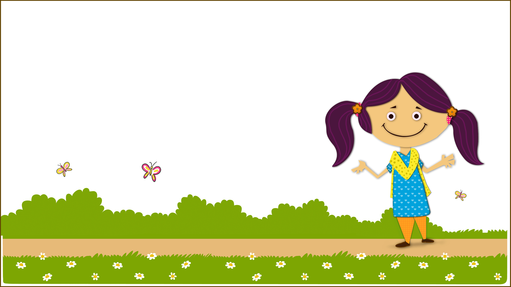

<!DOCTYPE html>
<html ng-app="genie-canvas">
  <head>
    <meta charset="utf-8">
    <meta name="viewport" content="initial-scale=1, maximum-scale=1, user-scalable=no, width=device-width">
    <meta http-equiv='expires' content='0'>
    <meta http-equiv='pragma' content='no-cache'>
    <meta name="viewport" content="width=device-width, initial-scale=1, minimum-scale=1, maximum-scale=1">
    <title></title>

    <link href="libs/ionic/css/ionic.css" rel="stylesheet">
    <link href="css/app/style.css" rel="stylesheet">

    <link rel="stylesheet" type="text/css" href="css/thirdparty/bookshelf_slider.css" />
    <link rel="stylesheet" type="text/css" href="css/thirdparty/skin02.css" />
    <!-- <link rel="stylesheet" type="text/css" href="css/thirdparty/hamburger.css" /> -->

    <style>
        #progressArea {
          position: relative;
          top: 51%;
          left: 35%;
          width: 29%;
          height: 17px;
          border-radius: 90px;
          background-color: #ddd;
        }
        #progressBar {
          position: absolute;
          width: 1%;
          height: 17px;
          border-radius: 90px;
          background-color: #e67300;
        }
        #gameArea {
            position: absolute;
            left:     50%;
            top:      50%;
        }
        #gameCanvas {
            width: 100%;
            height: 100%;
        }
        .inputText {
            -moz-border-radius: 15px;
            border-radius: 15px;
            border:solid 2px black !important;
            font-size: 15px !important;
            padding-left: 10px !important;
            font-weight: bold !important;
            padding-right: 5px;
            z-index: 1000;
            text-align: center;
        }
    </style>
  </head>
  <body>
    <ion-nav-view></ion-nav-view>
    <div id="loading" style="margin:auto; position:absolute;width:100%;height:100%; z-index: 999;">
        
        <!--  -->
        <!--  -->
        <div id="progressArea">
          <div id="progressBar"></div>
          <p id="progressCount" style=" margin-left: 46%; position: absolute; font-family: baloobhai; color: white;"></p>
        </div>
        <p class="icon-font conver-page-title" id="loadingText"></p>
        <!-- <p class="icon-font " id="loadingText1"></p> -->
        <!-- <p class="icon-font conver-page-title conver-page-title1" style="top: 55%;right: -1%;FONT-SIZE: 2EM;">Please wait...</p> -->
    </div> 
    <script type="text/javascript" src="js/thirdparty/jquery.min.js"></script>
    <script type="text/javascript" src="js/thirdparty/jquery.easing.1.3.js"></script>
    <script type="text/javascript" src="js/thirdparty/jquery.bookshelfslider.min.js"></script>
    <script type="text/javascript" src="js/thirdparty/exclude/xml2json.min.js"></script>
    <script type="text/javascript" src="js/thirdparty/exclude/Class.js"></script>
    <script type="text/javascript" src="js/thirdparty/async.min.js"></script>
    <!-- <script type="text/javascript" src="js/thirdparty/hamburger.js"></script> -->
    <!-- IF using Sass (run gulp sass first), then uncomment below and remove the CSS includes above
    <link href="css/ionic.app.css" rel="stylesheet">
    -->
    <!-- ionic/angularjs js -->
    <script src="libs/ionic/js/ionic.bundle.min.js"></script>

    <!-- cordova script (this will be a 404 during development) -->
    <script src="cordova.js"></script>

    
    <script src="libs/ngCordova/ng-cordova.min.js"></script>
    <script src="libs/angular-resource/angular-resource.min.js"></script>
    <script src="js/thirdparty/underscore.js"></script>

    
    <!-- your app's js -->
    <script src="js/AppConfig.js"></script>
    <script src="js/script.min.js"></script>
    <script src="js/renderer.min.js"></script>
    <!-- // <script src="/js/app/renderer.min.js"></script> -->
    <script src="js/telemetry.min.js"></script>
  </body>
</html>